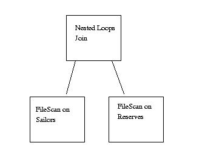

Overview Of Query Evaluation

We conclude our overview by tracing a query's journey through Minibase.
Top Level
The user starts Minibase, providing the database name as an
option, along with the size of the database and buffer pool
(in pages). The
disk space manager is instantiated and the buffer manager is
instantiated. The user then enters the SQL query. The
parser checks the
syntactic validity of the query and does the necessary type
checking. A call to the
catalog
is needed at this point. The plan tree is passed to the
catalog
to get the cardinality information. The best plan is computed
and the top node of the tree is passed to the
planner. The planner
recursively creates various 
More details
Record Storage and Retrieval
In the sample query shown above,
the join will also perform a projection, retaining only the sname attribute.
For every call to get_next of the outer tuple, the entire
inner relation is scanned. If the tuples match, then the
projection operation is performed.
To scan a relation, the heap file must be opened. Once opened,
a scan object is created. Calls to get_next on the scan object
result in calls to the buffer manager to pin pages in the buffer pool.
The page in the buffer pool is raw data cast as type HFPage. The
scan object calls methods of HFPage
to find out where the next record is, and returns a pointer to this
record.
More details
Conclusion
Tuples are printed to the screen after each successive call
to nested_loops_join::getNext.
The top level call to the nested_loops_join ends when DONE
is returned. At this point, the destructor of nested_loops_join
is called, causing its inputs (the two file scans) to be deleted.
Click here to go the Minibase Home Page